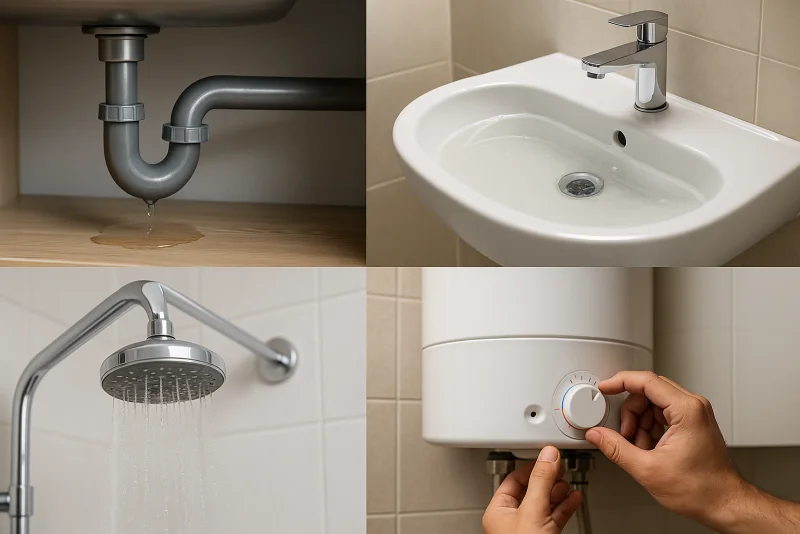

Marcha por la Paz en Mazatlán: crónica y análisis
Más de 50 mil personas vestidas de blanco marcharon por la paz en Mazatlán. Crónica completa con testimonios, ruta y análisis de la histórica movilización ciudadana.
Leer artículo completo →